OpenShift Express Application Wizard
|
| New Wizard |
We developed a wizard that allows you to create an application on OpenShift Express and import it to your Eclipse workspace.
The wizard holds all operations involved in creating a new application on OpenShift Express.
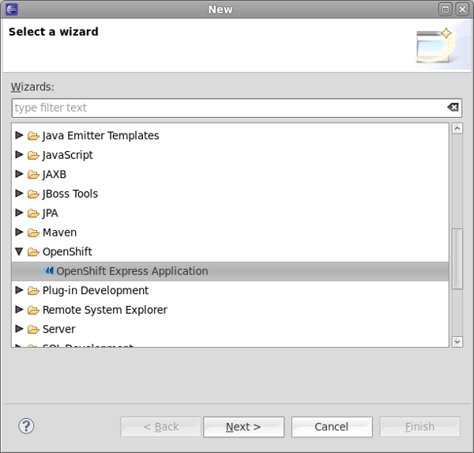
the first page requires you to privide your OpenShift Express credentials. If you have no account yet, you may get to the signup page by clicking the link on the top of this page.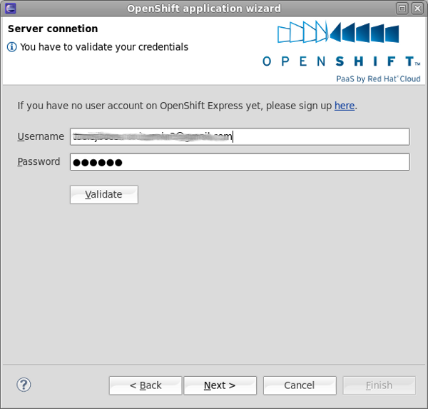
You may eventually have to create a domain first.
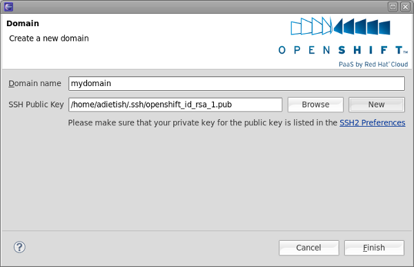
Once you have a domain, the wizard allows you to create a new application.
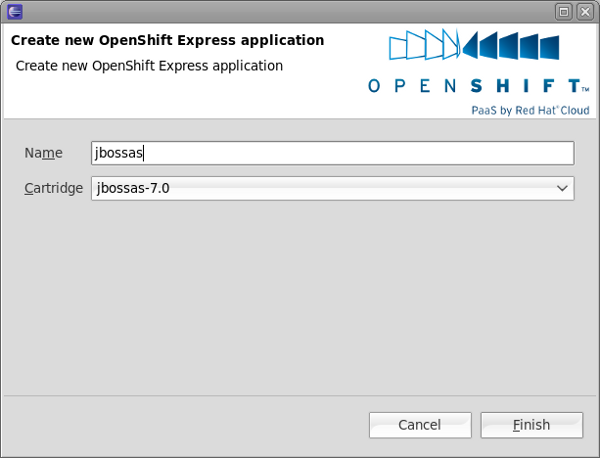
And then lists all your applications.
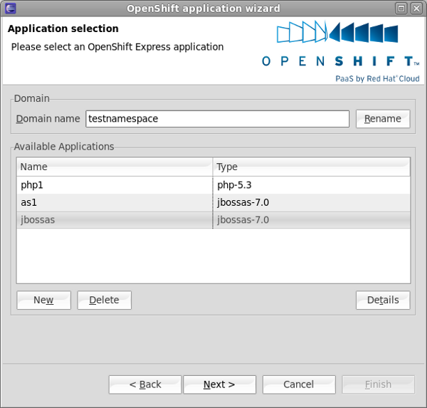
A dialog lists the details for your new application.
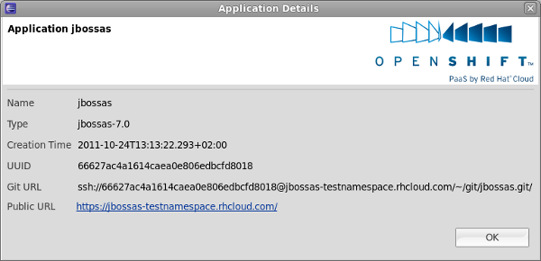
The last step involved determines to what local location the git repository is cloned to.
You may also instruct the tooling to create an Eclipse WTP server adapter for your application. It will allow you to publish changes to the
OpenShift Express PaaS.
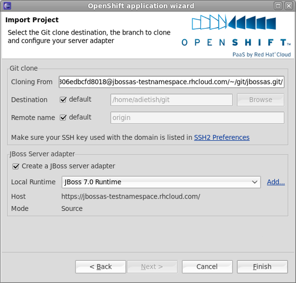
The wizard will then clone the repo...
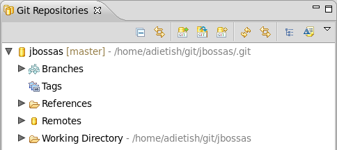
...import the OpenShift Express application to your workspace...
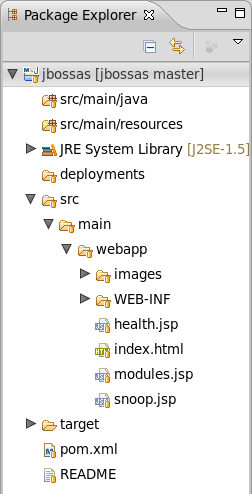
...and create the Eclipse WTP server adapter for you.
 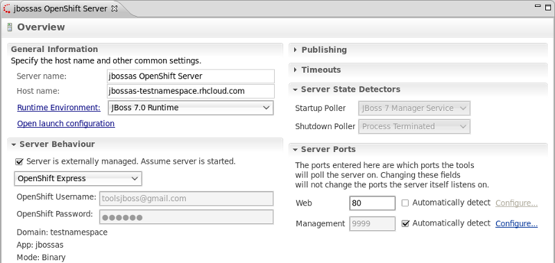
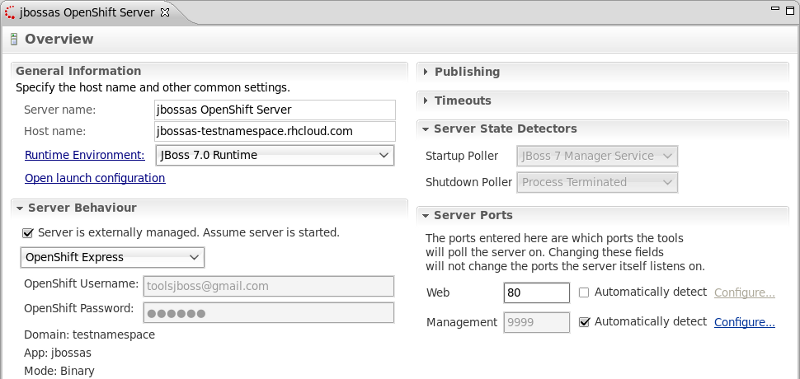
Related Jira
|
OpenShift Express REST client
|
| REST Client |
We also developed a client for the OpenShift Express REST service. It pretty much offers all features that
are currently available in the rhc-* command line tools (create/rename a domain, create/destroy applications,
list all existing applications, available cartridges, read the application log etc.).
Even though it's pretty new, it's code base is pretty well tested since it's well covered by unit-tests and
used in our application wizard and the Forge OpenShift Express plugin.
The plug-in is currently still an osgi bundle, but we will strip its Eclipse dependencies and move it to github
at some point.
You may check the current code in our SVN.
Related Jira
|